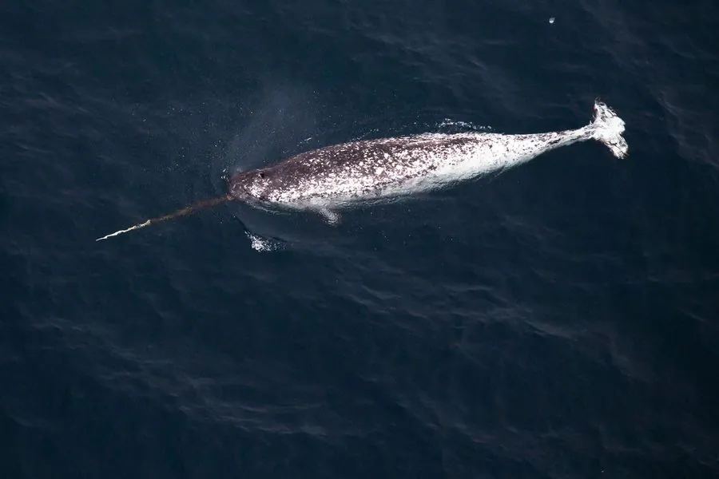

哺乳动物 · 动物界
独角鲸 Monodon monoceros

北极海域的中型鲸，雄鲸左上颌长出一根可长达 3 米的螺旋状长牙，被称为“海中独角兽”，擅长在冰下深潜。
- 分类
- 门脊索动物门纲哺乳纲目鲸目科一角鲸科属一角鲸属
- 栖息环境
- 北极海域的浮冰区、峡湾与沿岸水域
- 地理分布
- 加拿大北部、格陵兰和俄罗斯北冰洋沿岸
- 保护级别
- IUCN 无危（LC）；非中国分布物种
物种志
独角鲸体长 4–5.5 米，体重 800–1600 kg，雄性略大。它的身体呈灰白色，背部散布深色斑点，成年后斑点形成斑驳图案；没有背鳍，头部较小而圆。雄鲸的左上颌有一颗特化的长牙，穿透上唇向前伸出，呈逆时针螺旋状，长度可达 2–3 米，重约 10 kg。
独角鲸分布于北极海域，主要在加拿大北部、格陵兰和俄罗斯北冰洋沿岸，常结群活动，冬季随海冰移动。它以鱼类、乌贼和虾类为食，能潜入 800–1500 米的深水捕食。长牙的用途仍有争议，可能用于感知海水盐度、展示地位或争夺配偶。雌性妊娠期约 15 个月，每胎 1 仔，寿命约 30–50 年。目前独角鲸被列为无危，但气候变化正改变其海冰栖息环境。
形态与习性
- 食性鱼类、乌贼与虾类
- 体长4–5.5 m
- 体重800–1600 kg
- 寿命约 30–50 年
- 繁殖妊娠约 15 个月，每胎 1 仔
- 长牙雄鲸左上颌特化，长可达 2–3 m
趣味知识
- 独角鲸的长牙其实是一颗特化的左上颌牙齿。
- 长牙呈逆时针螺旋状，长度可达 2–3 米。
- 独角鲸能潜到 1500 米深的海底捕食。